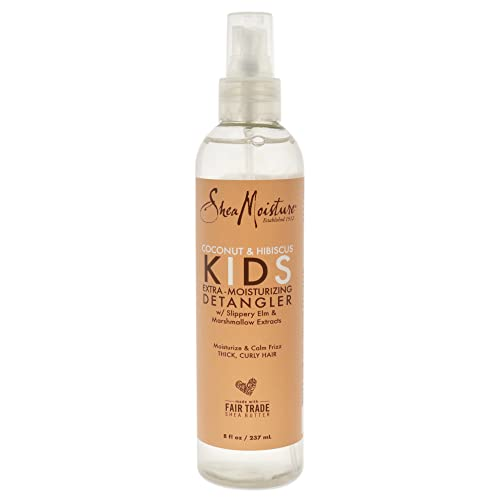

Email: abigailawuni0@gmail.com
Phone: 0541705208
Location: Accra, Ghana
Motivated and result driven professional with over 2 years experience with management and software development.
University Name, City, State
Graduated: May 2021
Company Name, City, State
June 2022-Present
Company Name, City, State
May 2021 - June 2023
Here are some projects I've worked on:
